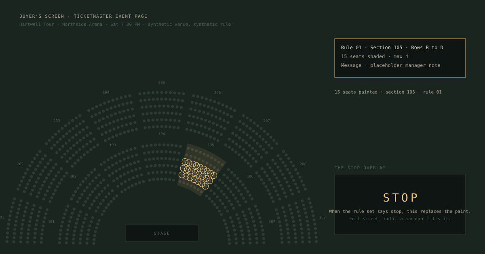

Round 9 · the drawings
The hero, four new diagrams, and three refreshed ones, wide beside tall. Round 8 vocabulary: thin strokes, the dim and the ink, brass for the thing that moves, lit for a note. Synthetic venue, synthetic rows.


The hero, four new diagrams, and three refreshed ones, wide beside tall. Round 8 vocabulary: thin strokes, the dim and the ink, brass for the thing that moves, lit for a note. Synthetic venue, synthetic rows.
